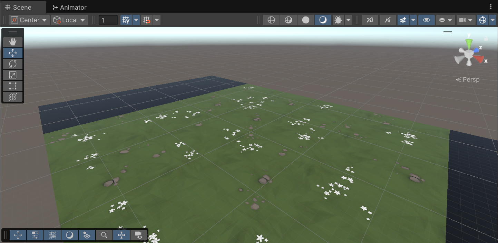
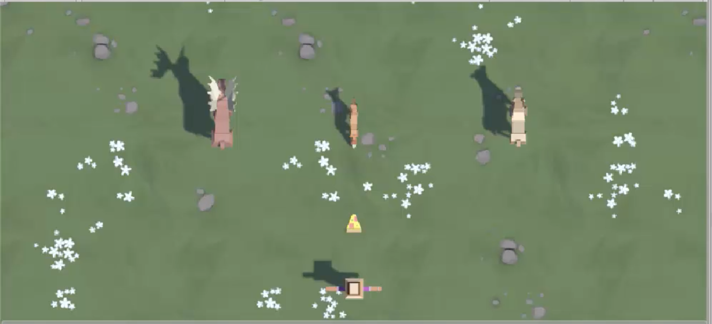

Runtime objects and the gameplay loop
In Lecture 07 · Unity Player Control, you connected Input Actions to movement. In its follow-camera section, one script held a reference to one existing object. Now the number of objects changes: food appears when you fire, animals arrive on a schedule, and finished objects leave the scene.
Build a small feeding prototype. Move horizontally, launch food, and feed approaching animals. The main learning is how creation, selection, timing, and overlap decisions work together.
Prior-knowledge recap: reuse InputAction, OnEnable/OnDisable, serialized references, and physics-step movement from Lecture 07 and Lecture 04 · Programming Essentials. Lecture 04’s filtering and feedback section already used CompareTag, Instantiate, and Destroy. Apply those APIs again to a continuous stream of objects. The new focus is selecting from an array and scheduling repeated creation.
Learning outcomes
By the end of this lecture, you will be able to:
- Select a valid random prefab index and a separate spawn position.
- Schedule and cancel repeated method calls.
- Combine creation, physics, filtering, and cleanup to manage runtime objects.
- Diagnose a failure by changing one setting and testing the result.
New conceptRuntime population
Before Play mode, a prefab is a saved reusable object in the Project window. It describes the components and starting values a new object should have. Calling Instantiate makes a separate live copy, called an instance, in the scene. You can create several instances from one prefab; moving or destroying one of those copies does not remove the prefab asset or the other copies.
This game needs objects to enter and leave while it runs. A button press creates food, a timer creates animals, and collision or boundary rules remove individual instances. Watch the Hierarchy during Play mode: the number of live objects changes even though the saved prefab assets stay in the Project window.
Examples
- Projectile: Each press creates a separate food instance.
- Enemy: The same animal prefab can have several active copies.
- Cleanup: Removing one missed animal leaves its prefab available for later spawns.
New conceptArrays for random prefab selection
An array is a numbered collection of slots. The animalPrefabs field holds references to prefab assets, so one manager component can choose among several kinds of animal. Fill its slots in the Inspector. With three slots, their indices are 0, 1, and 2; there is no slot 3.
Random.Range(0, animalPrefabs.Length) uses the integer overload: it may return the first index but never the upper bound, so its result is a valid slot when the array is nonempty. A second call with float arguments, such as Random.Range(-10f, 10f), chooses a horizontal coordinate and may include fractional values. These calls answer different questions: which prefab? and where should its copy appear?
Examples
- Three entries:
Random.Range(0, 3)can return0,1, or2. - One entry:
Random.Range(0, 1)always returns0. - Position:
Random.Range(-10f, 10f)can return fractional X coordinates. The float overload includes both endpoints; the integer overload excludes its upper endpoint.
New conceptScheduled method calls
SpawnAnimal is a method: the instructions for creating one animal are written once inside it. Writing a method does not make it run automatically. The manager registers that method with InvokeRepeating, giving Unity its name, how long to wait before the first call, and how long to wait between later calls. Each scheduled call runs the method once and creates one new animal.
For example, a 2f initial delay and 2f interval lead to calls at about game seconds 2, 4, and 6. This is a schedule in scaled game time, so pausing with Time.timeScale = 0 also pauses the calls. Disabling the manager cancels its schedule; enabling it again starts a new initial delay.
Examples
- First spawn: Delay
2fstarts after about two game seconds. - Next spawns: Interval
2fproduces calls near seconds 2, 4, and 6. - Disabled manager:
CancelInvokeexplicitly cancels the schedule when the component is disabled.
New conceptTrigger filtering
A visible mesh and a physics Collider have different jobs. The mesh is drawn on screen; the Collider gives Unity a shape it can test for contact. Marking a Collider as a trigger makes it report an overlap without using that Collider to physically push the other object away. When the overlap begins, Unity calls OnTriggerEnter on the relevant component and passes in the other Collider.
That callback can run for more than the interaction we want. The animal therefore checks whether the other object has the Food tag before removing anything. A food overlap counts as feeding; an overlap with another animal or the ground does not. The tag is a label you assign to the food prefab root in the Inspector, not a visual property Unity guesses from its mesh.
Examples
- Food meets animal: Remove the food and the fed animal.
- Animal meets animal: Ignore the overlap because the other object is not tagged
Food. - Ground meets animal: Ignore ground overlap; touching the floor must not count as feeding.
Instructor timing and scope
Preparation is completed before class. Use 8 minutes for concepts, 8 for player and projectile tests, 10 for spawning, 12 for trigger decisions, 16 for required application and variation, and 6 for review. The supplied scripts remove transcription time. Ask students to predict each controlled test before running it. Omit the separate Play Fetch challenge, personal-project lab, cube exercise, and camera-projection exploration from this hour.
Prepare the Prototype 2 project
Use Unity 6.3 and a new Universal 3D project named Basic Gameplay. No previous project files are needed. Finish downloads, package import, script import, and scene assembly before class.
Import the official environment.
- Download Prototype 2 Starter Files (.unitypackage).
- Use Assets → Import Package → Custom Package…, select the downloaded file, and import its contents. This current download is already a
.unitypackage; it does not need ZIP extraction. - Open Assets/Scenes/Prototype 2.unity.
- Use File → Save As… to save Assets/Scenes/Basic Gameplay.unity. The original starter scene can remain as a reference.
Explanation
The package adds the official environment and model assets. Saving the imported scene as
Basic Gameplay.unitygives this lab its own editable scene while preserving the starter scene.
The imported environment before gameplay objects are added. Source: Unity Learn, Lesson 2.1. Prepare input and the five scripts.
- In Window → Package Management → Package Manager, confirm Input System is installed.
- Use Edit → Project Settings → Player → Other Settings → Configuration → Active Input Handling → Both; apply and restart if prompted, following the source unit.
- Download the five lecture scripts.
- Extract them and copy the five
.csfiles into a new Assets/Scripts folder. - Wait for compilation; resolve any red Console errors before continuing. The same complete files appear below.
Explanation
Unity must compile the scripts before their components can appear in the Inspector. Input System provides the Move and Fire actions used by
PlayerFeeder; a Console compile error would prevent the later setup from working.Preparation checkpoint: the starter package contains the environment scene and Course Library models, materials, and prefabs; it contains no gameplay C# scripts. The lecture supplies those scripts. Keep only one copy of each class under Assets.
Place the player and use a stable top-down camera.
- Drag Assets/Course Library/Humans/SimpleFarmer_Man_01_White.prefab into the Hierarchy window.
- Rename it Player; set position and rotation to
(0, 0, 0). - On Main Camera, set position
(0, 25, 9), rotation(90, 0, 0), Projection Orthographic, and Size 16. - Use a 16:9 Game view for the lab.
Explanation
The Player starts at the world origin, and the fixed orthographic camera shows the play area from above. These shared coordinates make the later X limits and Z travel distances predictable.
Create editable lab copies of the food and animals.
- Create Assets/Prefabs.
- Drag Course Library/Food/Food_Pizza_01 and three animals into the scene: Animals/Farm/Animal_Cow_Brown, Animals/Farm/Animal_Horse_Brown, and Animals/Forest/Animal_Fox_01.
- For each instance, use its Hierarchy context menu Prefab → Unpack Completely.
- Rename them Food, Cow, Horse, and Fox. This leaves the imported library unchanged.
- Set Food rotation to
(0, 0, 0)and uniform scale to(2, 2, 2). - Set animal rotations to
(0, 180, 0). Leave animal scale at its imported value. - Attach the
LaneMover.csandLaneCleanup.csscripts from Assets/Scripts to the Food, Cow, Horse, and Fox root GameObjects. Their complete source also appears in Section 02. - On the Rigidbody added by
LaneMover, turn Use Gravity off and Is Kinematic on. - Set Food Speed to
12and animal Speed to4. - Set Report Miss on for animals only.
- Drag each configured root into Assets/Prefabs.
- Delete their scene instances. You will add collision components during class.
Explanation
These lab prefabs are saved definitions in the Project window. Editing each root before saving it means later food and animal instances inherit the mover, cleanup rule, speed, and Rigidbody settings. Deleting the scene instances leaves the scene ready for runtime creation.
Connect Player and the manager.
- Attach
PlayerFeederto Player. - Assign the Food prefab from the Project window to Food Prefab.
- Configure Move Action as Value / Vector2, add an Up/Down/Left/Right Composite, and bind Left and Right to the keyboard arrow keys. Leave Up and Down unbound.
- Configure Fire Action as Button, add a binding to <Keyboard>/space, and leave Interactions empty.
- Create an empty root named SpawnManager, attach
AnimalSpawner, and disable that component for the first test. - Set Animal Prefabs Size to
3and drag the three lab animal assets from the Project window into its slots. - Save the scene.
Explanation
PlayerFeedernow has a prefab reference and two configured actions.SpawnManagerholds the three animal prefab references; its component stays disabled for the first projectile test so animals do not obscure that result.- Attach
Refresher (1)Runtime population
Before Play mode, a prefab is a saved reusable object in the Project window. It describes the components and starting values a new object should have. Calling Instantiate makes a separate live copy, called an instance, in the scene. You can create several instances from one prefab; moving or destroying one of those copies does not remove the prefab asset or the other copies.
This game needs objects to enter and leave while it runs. A button press creates food, a timer creates animals, and collision or boundary rules remove individual instances. Watch the Hierarchy during Play mode: the number of live objects changes even though the saved prefab assets stay in the Project window.
Examples
- Projectile: Each press creates a separate food instance.
- Enemy: The same animal prefab can have several active copies.
- Cleanup: Removing one missed animal leaves its prefab available for later spawns.
Refresher (1)Arrays for random prefab selection
An array is a numbered collection of slots. The animalPrefabs field holds references to prefab assets, so one manager component can choose among several kinds of animal. Fill its slots in the Inspector. With three slots, their indices are 0, 1, and 2; there is no slot 3.
Random.Range(0, animalPrefabs.Length) uses the integer overload: it may return the first index but never the upper bound, so its result is a valid slot when the array is nonempty. A second call with float arguments, such as Random.Range(-10f, 10f), chooses a horizontal coordinate and may include fractional values. These calls answer different questions: which prefab? and where should its copy appear?
Examples
- Three entries:
Random.Range(0, 3)can return0,1, or2. - One entry:
Random.Range(0, 1)always returns0. - Position:
Random.Range(-10f, 10f)can return fractional X coordinates. The float overload includes both endpoints; the integer overload excludes its upper endpoint.
Refresher (1)Scheduled method calls
SpawnAnimal is a method: the instructions for creating one animal are written once inside it. Writing a method does not make it run automatically. The manager registers that method with InvokeRepeating, giving Unity its name, how long to wait before the first call, and how long to wait between later calls. Each scheduled call runs the method once and creates one new animal.
For example, a 2f initial delay and 2f interval lead to calls at about game seconds 2, 4, and 6. This is a schedule in scaled game time, so pausing with Time.timeScale = 0 also pauses the calls. Disabling the manager cancels its schedule; enabling it again starts a new initial delay.
Examples
- First spawn: Delay
2fstarts after about two game seconds. - Next spawns: Interval
2fproduces calls near seconds 2, 4, and 6. - Disabled manager:
CancelInvokeexplicitly cancels the schedule when the component is disabled.
Create, move, and remove food projectiles
Launch one food projectile, observe its movement and removal, then check the Player’s horizontal limits.
Observe one complete projectile lifetime.
- Enter Play mode with AnimalSpawner disabled.
- Focus Game view.
- Tap Space once, then hold it. One press creates one Food instance; holding does not create one every frame.
- In the Hierarchy window, watch the Food clone appear and later disappear after crossing
z = 25. - Stop Play mode.
Explanation
Trace one food object from start to finish. The Player holds a reference to the saved food prefab. When Fire is pressed,
PlayerFeedercreates a live copy at a launch point in front of the Player. That copy has its ownLaneMover, Rigidbody, andLaneCleanupcomponents. Its mover advances it each physics step; its cleanup component checks whether it has passed the far Z limit and removes that particular copy.The Z limit is a world coordinate, not a test of what appears inside the camera view. A projectile can leave the visible frame before or after it reaches that coordinate. After Section 04 adds the feeding rule, a food–animal overlap will remove both instances. For this first test, the boundary rule removes unused food so copies do not accumulate.
PlayerFeeder.cs using UnityEngine; using UnityEngine.InputSystem; public class PlayerFeeder : MonoBehaviour { [SerializeField] private InputAction moveAction; [SerializeField] private InputAction fireAction; [SerializeField] private GameObject foodPrefab; [SerializeField] private float speed = 10f; [SerializeField] private float xLimit = 10f; private void OnEnable() { moveAction.Enable(); fireAction.Enable(); } private void OnDisable() { moveAction.Disable(); fireAction.Disable(); } private void Update() { float horizontal = moveAction.ReadValue<Vector2>().x; Vector3 position = transform.position; position.x += horizontal * speed * Time.deltaTime; if (position.x < -xLimit) position.x = -xLimit; if (position.x > xLimit) position.x = xLimit; transform.position = position; if (fireAction.WasPressedThisFrame() && foodPrefab != null) { Vector3 launchPosition = position + new Vector3(0f, 1f, 1.5f); Instantiate(foodPrefab, launchPosition, foodPrefab.transform.rotation); } } }WasPressedThisFrame()is true on the frame when Fire changes from unpressed to pressed. Holding the button keeps it pressed, but does not create another press transition on every frame. The Fire action here is configured as a simple Button with no Hold or Tap interaction.The Inspector field identifies which prefab to use; assigning that field does not put a projectile into the scene.
Instantiatecreates the live copy. Its position argument places the copy at the Player’s world position plus a launch offset, lifting it to animal-body height and moving it ahead of the Player. Its rotation argument keeps the prefab’s saved orientation.LaneMover.cs using UnityEngine; [RequireComponent(typeof(Rigidbody))] public class LaneMover : MonoBehaviour { [SerializeField] private float speed = 8f; private Rigidbody body; private void Awake() { body = GetComponent<Rigidbody>(); } private void FixedUpdate() { Vector3 step = transform.forward * speed * Time.fixedDeltaTime; body.MovePosition(body.position + step); } }When a new instance starts,
Awakefinds its Rigidbody once and stores that reference.FixedUpdatethen runs on physics steps, andMovePositionasks the Rigidbody to move by a small distance each step. This continues the movement pattern used in Lecture 07.The script moves along each object’s local forward direction. Food faces world +Z, toward the animals. An animal prefab rotated 180° around Y faces world −Z, toward the Player. Both can use a positive speed because their rotations give the same movement code opposite world directions. If an animal moves away, check its saved prefab rotation before changing the speed sign.
LaneCleanup.cs using UnityEngine; public class LaneCleanup : MonoBehaviour { [SerializeField] private float upperZ = 25f; [SerializeField] private float lowerZ = -6f; [SerializeField] private bool reportMiss; private void Update() { if (transform.position.z > upperZ) { Destroy(gameObject); } else if (transform.position.z < lowerZ) { if (reportMiss) Debug.Log("Animal missed the feeding line."); Destroy(gameObject); } } }Inside
LaneCleanup,gameObjectmeans the particular scene object carrying that component.Destroy(gameObject)removes that instance and its attached components; it does not delete the prefab asset in the Project window. A later button press or scheduled spawn can still create another copy from the same asset.The
reportMisssetting distinguishes animals from food at cleanup time. When an animal crosses its miss boundary, it writes a Console message before removal. Food simply disappears at its boundary. The message is feedback for this lab; it does not stop Play mode or start a game-over sequence.Verify the player limits after movement.
- Run again and hold each arrow key. Player X stops at
-10and10. - Read the order in
Update: calculate the next position, constrain X, assign it, then launch. The player does not spend a frame outside the allowed range.
Explanation
The Player’s
Updatemethod calculates a candidate X position, clamps it to the allowed range, and only then assigns it to the Transform. The test confirms the savedxLimitapplies in both directions before a launch position is calculated.- Run again and hold each arrow key. Player X stops at
Food starts at z = 1.5 and moves at 12 units/second. Approximately when will it pass z = 25?
Reveal answer
After about (25 - 1.5) / 12 = 1.96 seconds, with physics-step and frame timing affecting the exact removal frame.
Refresher (2)Runtime population
Before Play mode, a prefab is a saved reusable object in the Project window. It describes the components and starting values a new object should have. Calling Instantiate makes a separate live copy, called an instance, in the scene. You can create several instances from one prefab; moving or destroying one of those copies does not remove the prefab asset or the other copies.
This game needs objects to enter and leave while it runs. A button press creates food, a timer creates animals, and collision or boundary rules remove individual instances. Watch the Hierarchy during Play mode: the number of live objects changes even though the saved prefab assets stay in the Project window.
Examples
- Projectile: Each press creates a separate food instance.
- Enemy: The same animal prefab can have several active copies.
- Cleanup: Removing one missed animal leaves its prefab available for later spawns.
Randomize and schedule animal spawns
Use the prepared SpawnManager to spawn animals repeatedly. Change its interval once, then observe how missed animals leave the scene.
Test the scheduler with one visible change.
- Enable AnimalSpawner outside Play mode.
- Keep First Delay and Interval at
2, X Range at10, and Spawn Z at18. - Enter Play mode and observe several arrivals.
- Stop, change Interval to
1, and run again. Only the gap between arrivals should change; animal speed stays at4.
Explanation
The
SpawnManagerscene object was created in Section 01. ItsanimalPrefabsarray contains references to saved prefab assets, not already-spawned animals. The manager keeps the choices and settings needed to create new instances.Each time
SpawnAnimalruns, the first random call chooses an array index. For example, if slots0,1, and2contain three animal prefabs and the result is1, the method selects the prefab in slot1. A second random call chooses X, such as-4.2. WithspawnZ = 18, the new instance starts at(-4.2, 0, 18)and uses the selected prefab’s saved rotation. The next call creates a different live instance even if it picks the same prefab again.Choosing a prefab does not determine its X coordinate: the two random calls are independent. The code does not remove a choice after using it, so two consecutive calls may pick the same animal. X values may also be close together or repeat. Random selection gives possible results; it does not promise a different animal or an even spread on every call.
AnimalSpawner.cs using UnityEngine; public class AnimalSpawner : MonoBehaviour { [SerializeField] private GameObject[] animalPrefabs; [SerializeField] private float xRange = 10f; [SerializeField] private float spawnZ = 18f; [SerializeField] private float firstDelay = 2f; [SerializeField] private float interval = 2f; private void OnEnable() { if (animalPrefabs == null || animalPrefabs.Length == 0 || interval <= 0f) { Debug.LogError("Assign animal prefabs and a positive interval.", this); return; } foreach (GameObject prefab in animalPrefabs) { if (prefab == null) { Debug.LogError("Fill every animal prefab slot.", this); return; } } InvokeRepeating(nameof(SpawnAnimal), firstDelay, interval); } private void OnDisable() { CancelInvoke(nameof(SpawnAnimal)); } private void SpawnAnimal() { int index = Random.Range(0, animalPrefabs.Length); float x = Random.Range(-xRange, xRange); Vector3 position = new Vector3(x, 0f, spawnZ); GameObject prefab = animalPrefabs[index]; Instantiate(prefab, position, prefab.transform.rotation); } }SpawnAnimalis an ordinary C# method that creates one animal when called.InvokeRepeatingtells Unity to call it later and then repeatedly; no code inUpdatehas to count frames.nameof(SpawnAnimal)provides the method name to that scheduling call. It helps keep the name in sync if you rename the method in code.OnEnableestablishes the schedule when the component becomes active.OnDisablecallsCancelInvokeso scheduled spawns stop when it becomes inactive. Enabling it again runsOnEnableand starts a fresh first delay. The delay and interval use scaled game time, so changingTime.timeScalechanges their real-world pace.The manager checks its setup before it asks Unity to schedule spawns. If the array is empty, no valid index exists. If a slot is unassigned, a later random choice could select a missing prefab. If the repeat interval is zero or negative, the intended repeated timing is invalid. Each guard reports the problem and uses
returnto leaveOnEnablebefore scheduling.The
foreachloop visits each prefab reference in the array once to catch an unassigned slot. It does not spawn every listed animal; actual selection happens later insideSpawnAnimal. Areturnhere ends only the current method call, so the game keeps running while you fix the Inspector assignment.Confirm the population cleans itself up.
- Do not fire. Watch animals travel past Player and disappear below
z = -6. Each miss produces a Console message. - Stop Play mode and restore Interval to
2. - Save the scene.
Explanation
Each scheduled call creates one independent animal instance.
LaneCleanupremoves a missed instance when it crosses the lower Z boundary and reports that miss. With a roughly 24-unit trip at speed4, an animal remains active for about six seconds, so the active population should remain bounded instead of growing indefinitely.- Do not fire. Watch animals travel past Player and disappear below
Why is Random.Range(0, animalPrefabs.Length - 1) incorrect for selecting among three entries?
Reveal answer
The integer overload excludes its upper bound. With three entries, that call returns only 0 or 1, so index 2 is never chosen. Use Length as the exclusive bound.
Refresher (2)Arrays for random prefab selection
An array is a numbered collection of slots. The animalPrefabs field holds references to prefab assets, so one manager component can choose among several kinds of animal. Fill its slots in the Inspector. With three slots, their indices are 0, 1, and 2; there is no slot 3.
Random.Range(0, animalPrefabs.Length) uses the integer overload: it may return the first index but never the upper bound, so its result is a valid slot when the array is nonempty. A second call with float arguments, such as Random.Range(-10f, 10f), chooses a horizontal coordinate and may include fractional values. These calls answer different questions: which prefab? and where should its copy appear?
Examples
- Three entries:
Random.Range(0, 3)can return0,1, or2. - One entry:
Random.Range(0, 1)always returns0. - Position:
Random.Range(-10f, 10f)can return fractional X coordinates. The float overload includes both endpoints; the integer overload excludes its upper endpoint.
Refresher (2)Scheduled method calls
SpawnAnimal is a method: the instructions for creating one animal are written once inside it. Writing a method does not make it run automatically. The manager registers that method with InvokeRepeating, giving Unity its name, how long to wait before the first call, and how long to wait between later calls. Each scheduled call runs the method once and creates one new animal.
For example, a 2f initial delay and 2f interval lead to calls at about game seconds 2, 4, and 6. This is a schedule in scaled game time, so pausing with Time.timeScale = 0 also pauses the calls. Disabling the manager cancels its schedule; enabling it again starts a new initial delay.
Examples
- First spawn: Delay
2fstarts after about two game seconds. - Next spawns: Interval
2fproduces calls near seconds 2, 4, and 6. - Disabled manager:
CancelInvokeexplicitly cancels the schedule when the component is disabled.
Configure trigger-based feeding
Add a Food tag and trigger shapes, then test whether a food projectile feeds an animal on overlap.
Observe the missing response and label Food.
- Before adding trigger Colliders, enter Play mode and fire once at an animal. Observe the food pass through without feeding; then stop Play mode.
- Select the Food prefab.
- In the Inspector, use Tag → Add Tag… and add Food.
- Return to the Food prefab and assign the Food tag to its root. Child tagging is unnecessary for this setup.
Explanation
The first test shows the missing behavior. A visible overlap does not give the scripts a contact event by itself. Assigning the
Foodtag gives the later callback a category it can check; creating the tag without assigning it would leave the food unclassified.Give every moving root exactly one trigger shape.
- Open each lab prefab in Prefab Mode. Inspect its hierarchy for existing Colliders.
- Remove extra imported Colliders from these lab copies if present; keep one Box Collider on the root.
- Use Add Component → Box Collider where needed.
- Enable Is Trigger on the root Box Collider.
- Use Edit Collider and the handles to fit the model.
- Ensure the food and animal boxes overlap vertically: food travels at world
y = 1, while animal pivots are at ground height. Fit boxes to bodies, not just pivot points. - Confirm the root Rigidbody has Use Gravity off and Is Kinematic on.
- Save each prefab before leaving Prefab Mode.
Explanation
Meshes are drawn for the camera, while Colliders give physics shapes to compare. A trigger reports when those shapes begin overlapping without using that trigger shape as a solid barrier. Fitting the boxes at the food’s travel height makes the overlap detectable.
Object Required configuration Responsibility Food root Box Collider: Is Trigger on; kinematic Rigidbody, gravity off; tag Food Moves forward and identifies an edible projectile. Each animal root Box Collider: Is Trigger on; kinematic Rigidbody, gravity off; FeedAnimal Moves down the lane and accepts only Food. Player / Ground No new collision behavior required Player supplies input; the ground supplies the visible field. Player uses Transform movement because this lab gives it no physics interactions. For this event to arrive, both objects need Colliders, at least one Collider must be a trigger, and at least one object must have a Rigidbody. The lab places the components on the prefab roots and uses kinematic Rigidbodies so the scripts control movement. If food visibly passes through an animal without a callback, check these physics settings and their height in the scene.
Apply the response to animals only.
- Attach
FeedAnimalto Cow, Horse, and Fox prefab roots. - Save each prefab. Do not attach it to Food.
- Enter Play mode.
- Aim at an approaching animal and press Space. The food and animal should disappear on overlap.
- Let another animal pass to confirm cleanup still works.
Explanation
The animal’s
FeedAnimalcomponent decides what a reported overlap means. The callback below receives the other Collider, checks its tag, and removes objects only when the other object is Food.FeedAnimal.cs using UnityEngine; public class FeedAnimal : MonoBehaviour { private bool fed; private void OnTriggerEnter(Collider other) { if (fed || !other.CompareTag("Food")) return; fed = true; other.gameObject.SetActive(false); Destroy(other.gameObject); Destroy(gameObject); } }When a qualifying overlap begins, Unity calls
OnTriggerEnter(Collider other)on the animal’sFeedAnimalcomponent. The parameterotheris the Collider that entered this animal’s trigger. That gives the method an object to inspect: it can check the other object’s tag and decide whether to respond.In the callback,
other.CompareTag("Food")asks whether the incoming Collider’s GameObject carries theFoodtag. If it does not, the method returns, leaving the animal and the other object alone. This is why the tag belongs on the same food prefab root as its Collider in this lab.When food enters,
fedchanges to true so a second callback cannot feed the same animal again while removal is pending. The code disables that food object immediately, then requests destruction of the food and animal instances. The saved prefab assets remain available for later creation. This walkthrough assumes the single-root-collider setup specified in preparation.- Attach
Two animals overlap. Why should neither disappear?
Reveal answer
Neither root has the Food tag, so the callback returns before removing anything. A physics event reports contact; the condition supplies the gameplay meaning.
Refresher (1)Trigger filtering
A visible mesh and a physics Collider have different jobs. The mesh is drawn on screen; the Collider gives Unity a shape it can test for contact. Marking a Collider as a trigger makes it report an overlap without using that Collider to physically push the other object away. When the overlap begins, Unity calls OnTriggerEnter on the relevant component and passes in the other Collider.
That callback can run for more than the interaction we want. The animal therefore checks whether the other object has the Food tag before removing anything. A food overlap counts as feeding; an overlap with another animal or the ground does not. The tag is a label you assign to the food prefab root in the Inspector, not a visual property Unity guesses from its mesh.
Examples
- Food meets animal: Remove the food and the fed animal.
- Animal meets animal: Ignore the overlap because the other object is not tagged
Food. - Ground meets animal: Ignore ground overlap; touching the floor must not count as feeding.
Optional FAQ: why use a trigger?
We want an overlap notification without the food physically pushing the animal. A solid-contact response would use a different configuration and typically OnCollisionEnter. Do not substitute the callback name without changing the physics setup.
Required task — test the gameplay loop
Deliverable: save a playable Basic Gameplay.unity scene and capture a short recording or sequential screenshots showing a launch, a successful feed, and a missed-animal cleanup. Include one screenshot of the populated Animal Prefabs array.
Run a complete test from the saved scene.
- Start with no manually placed Food or animal instances.
- Confirm Player stays within its limits and each Space press creates food.
- Observe at least 12 spawns.
- Record which prefabs appear and whether X positions vary.
Explanation
This combined run checks player limits, launch behavior, and repeated spawning in the saved scene. Twelve spawns give several observations, but random selection still does not guarantee every animal or an even distribution.

Visual reference for the player–food–animal arrangement, from Unity Learn, Lesson 2.1. Animal choices, spacing, and camera framing in your result may differ. Collect evidence of both removal paths.
- Feed an animal and show that both objects disappear.
- Then allow an animal to cross the lower bound and show the miss message.
- Stop Play mode.
- Check settings outside Play mode and save.
- Retain the evidence outside Assets if it is only for submission.
Explanation
A successful feed removes both interacting instances. A miss follows a different path:
LaneCleanupremoves the animal at the lower boundary and logs it. Capturing both results shows that the scene handles contact and non-contact outcomes.
Refresher (3)Runtime population
Before Play mode, a prefab is a saved reusable object in the Project window. It describes the components and starting values a new object should have. Calling Instantiate makes a separate live copy, called an instance, in the scene. You can create several instances from one prefab; moving or destroying one of those copies does not remove the prefab asset or the other copies.
This game needs objects to enter and leave while it runs. A button press creates food, a timer creates animals, and collision or boundary rules remove individual instances. Watch the Hierarchy during Play mode: the number of live objects changes even though the saved prefab assets stay in the Project window.
Examples
- Projectile: Each press creates a separate food instance.
- Enemy: The same animal prefab can have several active copies.
- Cleanup: Removing one missed animal leaves its prefab available for later spawns.
Refresher (2)Trigger filtering
A visible mesh and a physics Collider have different jobs. The mesh is drawn on screen; the Collider gives Unity a shape it can test for contact. Marking a Collider as a trigger makes it report an overlap without using that Collider to physically push the other object away. When the overlap begins, Unity calls OnTriggerEnter on the relevant component and passes in the other Collider.
That callback can run for more than the interaction we want. The animal therefore checks whether the other object has the Food tag before removing anything. A food overlap counts as feeding; an overlap with another animal or the ground does not. The tag is a label you assign to the food prefab root in the Inspector, not a visual property Unity guesses from its mesh.
Examples
- Food meets animal: Remove the food and the fed animal.
- Animal meets animal: Ignore the overlap because the other object is not tagged
Food. - Ground meets animal: Ignore ground overlap; touching the floor must not count as feeding.
Required task — test spawn range and tag filtering
Deliverable: a three-line test note: prediction, observed result, and final setting. Change the spawn width, then isolate one collision fault. Save the working configuration at the end.
Predict and test a narrower spawn region.
- Outside Play mode, change SpawnManager X Range from
10to3. Keep Player X Limit at10. - Run and observe at least six spawns.
- Explain why the player can still travel farther sideways than the spawn region.
- Stop Play mode and restore X Range to
10.
Explanation
xRangecontrols where animals can appear; the Player’sxLimitcontrols where the Player can move. Changing one value leaves the other unchanged, so the narrower spawn region should not narrow Player movement.- Outside Play mode, change SpawnManager X Range from
Remove one classification setting and explain the symptom.
- Temporarily set the Food prefab tag to Untagged.
- Run and aim at an animal: both objects should pass through without feeding, though their cleanup still works.
- Stop, restore the Food tag to Food, save the prefab, and retest one successful feed.
- Save the scene with Interval
2and X Range10.
Explanation
The Colliders can still report an overlap when Food is untagged, but
CompareTag("Food")rejects it. Restoring the tag and retesting isolates classification as the cause while keeping the physics setup the same.
Does a working trigger guarantee a successful feeding response?
Reveal answer
No. The event can occur while CompareTag("Food") rejects the object. Inspect both physics setup and the response condition.
Refresher (3)Arrays for random prefab selection
An array is a numbered collection of slots. The animalPrefabs field holds references to prefab assets, so one manager component can choose among several kinds of animal. Fill its slots in the Inspector. With three slots, their indices are 0, 1, and 2; there is no slot 3.
Random.Range(0, animalPrefabs.Length) uses the integer overload: it may return the first index but never the upper bound, so its result is a valid slot when the array is nonempty. A second call with float arguments, such as Random.Range(-10f, 10f), chooses a horizontal coordinate and may include fractional values. These calls answer different questions: which prefab? and where should its copy appear?
Examples
- Three entries:
Random.Range(0, 3)can return0,1, or2. - One entry:
Random.Range(0, 1)always returns0. - Position:
Random.Range(-10f, 10f)can return fractional X coordinates. The float overload includes both endpoints; the integer overload excludes its upper endpoint.
Refresher (3)Trigger filtering
A visible mesh and a physics Collider have different jobs. The mesh is drawn on screen; the Collider gives Unity a shape it can test for contact. Marking a Collider as a trigger makes it report an overlap without using that Collider to physically push the other object away. When the overlap begins, Unity calls OnTriggerEnter on the relevant component and passes in the other Collider.
That callback can run for more than the interaction we want. The animal therefore checks whether the other object has the Food tag before removing anything. A food overlap counts as feeding; an overlap with another animal or the ground does not. The tag is a label you assign to the food prefab root in the Inspector, not a visual property Unity guesses from its mesh.
Examples
- Food meets animal: Remove the food and the fed animal.
- Animal meets animal: Ignore the overlap because the other object is not tagged
Food. - Ground meets animal: Ignore ground overlap; touching the floor must not count as feeding.
Completion criteria and sources
The saved result has one Player, one active SpawnManager, a camera and environment, and four configured lab prefab assets. Runtime clones appear only during Play mode. The scene keeps running after a miss; a full loss/restart system is outside this lecture.
| Symptom | Likely cause | Check |
|---|---|---|
| No input | Action disabled or missing binding | Focus Game view; inspect Move and Fire bindings and paired lifecycle methods. |
| Nothing spawns | Disabled manager, empty array, or missing slot | Read Console errors; assign Project assets and enable the component. |
| Animals travel away | Wrong prefab rotation | Animal Y rotation must be 180°; speed remains positive. |
| Food passes through | No qualifying overlap, wrong tag, or missing script | Check collider height, root tag, trigger flags, Rigidbody, and FeedAnimal. |
| Objects accumulate | Cleanup missing on the asset | Open the prefab, confirm LaneCleanup, then test a newly spawned instance. |
| Inspector edit has no later effect | Changed a runtime clone or a scheduled interval mid-run | Stop Play mode, edit the asset or saved component, then restart. |
What persists after leaving Play mode: spawned clones, the prefab assets, or edits made only to runtime instances?
Reveal answer
The saved prefab assets persist. Runtime clones are removed when Play mode ends, and ordinary runtime Inspector edits are not retained. Make final configuration changes outside Play mode.
Official sources and adaptation notes
This lecture selects the spawning and interaction sequence from Unity’s Basic Gameplay unit. The complete lecture scripts retain the previous course’s paired action lifecycle and Rigidbody movement. They add a press-transition check, array validation, explicit trigger filtering, and neutral miss logging. Source screenshots may show intermediate objects or older interface details; use this page’s complete files and Unity 6.3 settings.
- 01Basic Gameplay · unit scope
- 022.1 Player Positioning · starter and bounds
- 032.2 Food Flight · instance lifetime
- 042.3 Random Animal Stampede · arrays and random choice
- 052.4 Collision Decisions · timing and triggers
- 06Instantiate · copy an object
- 07Destroy · remove an instance
- 08Random.Range · integer and float bounds
- 09InvokeRepeating · scheduling
- 10OnTriggerEnter · physics requirements
Input System · InputAction and WasPressedThisFrame
Optional motion reference
▶ Unity Learn · Collision Decisions overview video — watch the intended arrival and feeding sequence. No additional task is required.